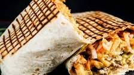

Tacos recipe

These crispy fish tacos with shredded cabbage and a spicy
homemade white sauce are just delicious! Serve with homemade pico
de gallo and lime wedges to squeeze on top.
Ingredients
- 1 cup all-purpose flour
- 2 tablespoons cornstarch
- 1 teaspoon baking powder
- teaspoon salt
- 1 cup beer
- 1 egg
Directions
-
Make beer batter: Combine flour, cornstarch, baking powder, and salt in a large bowl. Blend beer and egg in a separate bowl, then quickly stir into flour mixture until combined with a few lumps remaining.
-
Make white sauce: Mix together yogurt and mayonnaise in a medium bowl. Gradually stir in fresh lime juice until consistency is slightly runny. Season with jalapeño, capers, cayenne, oregano, cumin, and dill.
-
Start fish tacos: Heat oil in a deep-fryer to 375 degrees F (190 degrees C).
-
Dust fish pieces lightly with flour. Set aside.
-
Dip floured fish pieces into beer batter. Set aside.
-
Fry in hot oil until crisp and golden brown. Drain on paper towels. Lightly fry tortillas in hot oil until just crisped, but not too crisp. Drain on paper towels.
-
Place fried fish in tortillas; top with shredded cabbage and white sauce.